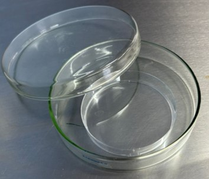
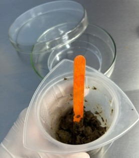
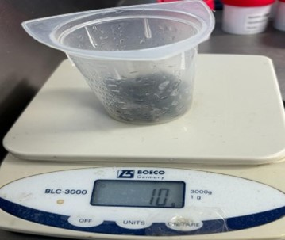
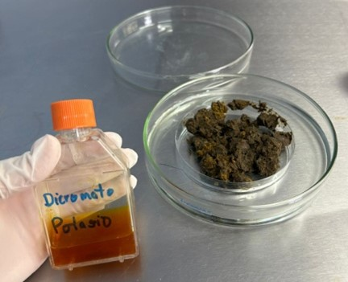
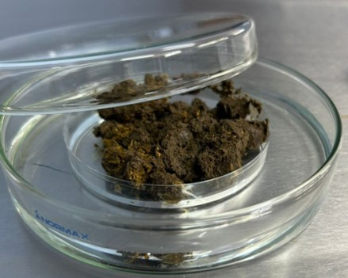
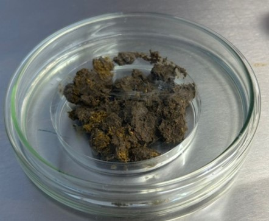

Guía parasitaria de Helmintos, con muestras de rumiantes de la UTN sede Atenas
Cultivo



Se utilizaron dos cajas Petri, de tal manera que la más pequeña se colocó dentro de la más grande, se realizo un pool de heces y se procedió a pesar 10 gramos, los cuales se utilizaron para el cultivo



Las heces se colocaron dentro de la caja Petri pequeña y se le agregaron unas gotas de dicromato de potasio, el agua se colocó en la caja Petri grande y se coloca la tapa, de tal manera que se hace una cámara húmeda. El cultivo se dejó durante 7 días se aireó una hora al día.